Trabajo Fin de Grado
Un portal de transparencia para datos libres
Autor: Germán Martínez Maldonado
Tutor: Juan Julián Merelo Guervós
Trabajo realizado bajo licencia CC-BY-SA 4.0

Introducción
Portal de transparencia de la Universidad de Granada:
UGR Transparente
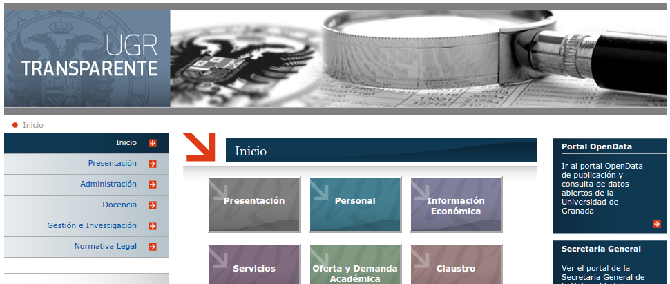
Plataforma de datos abiertos de la Universidad de Granada:
OpenData UGR
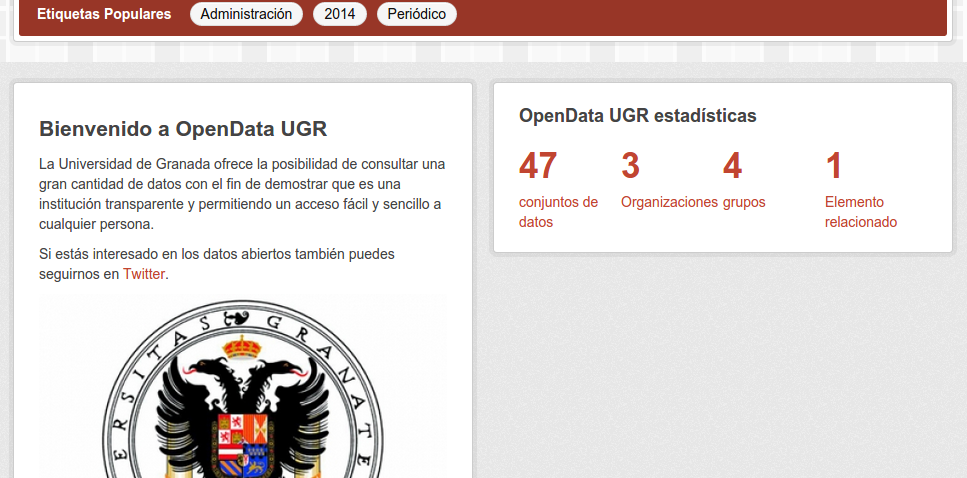
Objetivos
Objetivos principales
- Promover el desarrollo bajo software libre en la administración pública
- Solucionar problemas visualización en el portal
- Implementar una metodología de desarrollo continuo DevOps
Objetivo secundario
- Desarrollo de una plataforma CKAN totalmente personalizada
Alcance de los objetivos
- Mismo resultado, diferente desarrollo
- Indiferencia del ámbito.
Planificación
Fases y entregas
- Especificación proyecto
- Planificación
- Análisis y diseño
- Implementación
- Pruebas
- Documentación
Estructura de descomposición del trabajo

Temporización
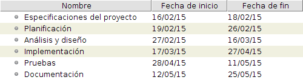 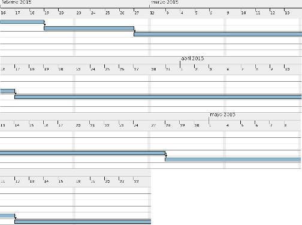Análisis
Actores
- Desarrollador
- Usuario
"Persona"
Requisitos
- Funcionales: administración portal, acceso información, pruebas de software, configuración automática
- No funcionales: Node.js
- Información: elementos y enlaces
Modelos de casos de uso
- Descripción básica de los actores: descripción, características, relaciones, atributos
- Descripción casos de uso: actores, tipo, referencias, precondición, postcondición, proposito, resumen, curso normal/alterno
Diagramas
- Diagrama de paquetes
- Diagramas de casos de uso
- Diagramas de actividad
- Diagrama conceptual
Diseño
Diseño general
- Node.js
- JSON
- Módulos de la aplicación
- Módulos para el desarrollo continuo
Desarrollo colaborativo
- Sistema de control de versiones: Git
- Plataforma de desarrollo: GitHub
- Metodología de desarrollo: DevOps
Diseño de los tests
- TDD
- Tests basados en el comportamiento
- Test unitarios: Mocha
- Test de cobertura: Istanbul
Resto del desarrollo continuo
- Integración continua: Travis CI
- Despliegue automático: Flightplan
- Provisionamiento: Ansible
Implementación
Uso de JSON
{
"nombre":"Personal",
"plantilla":"personal",
"contenido":[
{
"encabezado":"Información Salarial: 2015",
"link":"informacion-salarial-2015",
"texto":"Información relativa a la oferta de recursos humanos de la universidad: personal docente e investigador (PDI) y personal de administración y servicios (PAS). Se ofrecen los datos sobre el personal contratado y sus distintas categorías referentes al curso 2014 / 2015: PAS (funcionarios y laborales) y PDI (funcionarios y laborales)."
},
],
"datos":[
{
"dataset":"Información Salarial: 2015",
"id_dataset":"informacion-salarial-2015",
"nombre":"Análisis total plantilla: género",
"vista":1,
"url":"51d53138-0408-4257-9909-57acea137a58",
"descarga":"985a8e1e-734b-432a-ac65-a7da6a4143d0/resource/51d53138-0408-4257-9909-57acea137a58/download/analisisgeneroplantillatotal.csv"
},
]
}
Tests unitarios y de cobertura
var should = require("should"),
request = require("supertest");
describe('Test de carga y formato de JSONs', function(){
describe('Archivo de configuración', function(){
var config = cargar(__dirname+"/../config/config.json");
describe('Carga de archivo', function(){
it('Cargado', function(){
config.should.not.be.null;
});
});
describe('Formato de archivo', function(){
describe('Campos obligatorios', function(){
it('nombre', function(){
config.should.have.property("nombre");
});
});
});
});
};
Integración continua
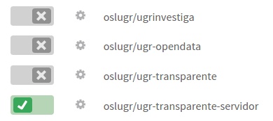Despliegue automático
var plan = require('flightplan');
plan.target('transparente', {
host: 'transparente.ugr.es',
username: process.env.USER,
agent: process.env.SSH_AUTH_SOCK
});
plan.remote(function(remote) {
remote.log('Creando copia de seguridad...');
remote.sudo('cp -Rf ugr-transparente-servidor ugr-transparente-servidor.bak', {user: process.env.USER});
remote.with('cd ugr-transparente-servidor',function() {
remote.log('Deteniendo el servidor...');
remote.exec('sudo npm run-script kill');
remote.log('Restableciendo parámetros de acceso...');
remote.exec('sed "s/IP=transparente.ugr.es/IP=127.0.0.1/" -i package.json');
remote.exec('sed "s/PORT=80/PORT=3000/" -i package.json');
remote.log('Obteniendo cambios...');
remote.exec('git pull');
remote.log('Instalando dependencias...');
remote.exec('sudo npm install');
remote.log('Cambiando parámetros de acceso...');
remote.exec('sed "s/IP=127.0.0.1/IP=transparente.ugr.es/" -i package.json');
remote.exec('sed "s/PORT=3000/PORT=80/" -i package.json');
remote.log('Arrancando el servidor...');
remote.exec('sudo npm start');
});
});
Provisionamiento
---
- hosts: transparente
sudo: yes
remote_user: "{{user}}"
tasks:
- name: Añadiendo repositorio para instalar Node.js...
apt_repository: repo='ppa:chris-lea/node.js'
- name: Actualizando lista de paquetes...
apt: update_cache=yes
- name: Instalando git...
apt: name=git state=present
- name: Instalando Node.js...
apt: name=nodejs state=present
- name: Clonando repositorio con la aplicación...
git: repo=https://github.com/oslugr/ugr-transparente-servidor.git
dest=/home/"{{user}}"/ugr-transparente-servidor
version=master
- name: Cambiando propietario del directorio de la aplicación...
file: path=/home/"{{user}}"/ugr-transparente-servidor
owner="{{user}}" group="{{user}}" state=directory recurse=yes
- name: Instalando las dependencias de la aplicación...
npm: path=/home/"{{user}}"/ugr-transparente-servidor
- name: Cambiando parámetros de acceso (1/2)...
command: sed "s/IP=127.0.0.1/IP=transparente.ugr.es/" -i
/home/"{{user}}"/ugr-transparente-servidor/package.json
- name: Cambiando parámetros de acceso (2/2)...
command: sed "s/PORT=3000/PORT=80/" -i
/home/"{{user}}"/ugr-transparente-servidor/package.json
- name: Arrancando el servidor...
command: chdir=ugr-transparente-servidor npm start
Pruebas
Pruebas unitarias
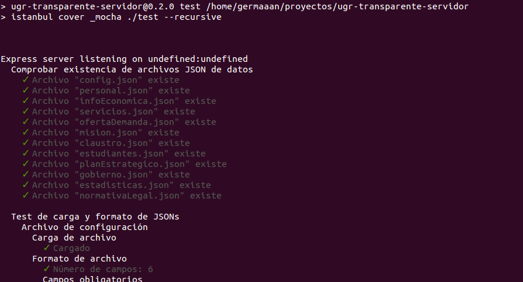Pruebas unitarias
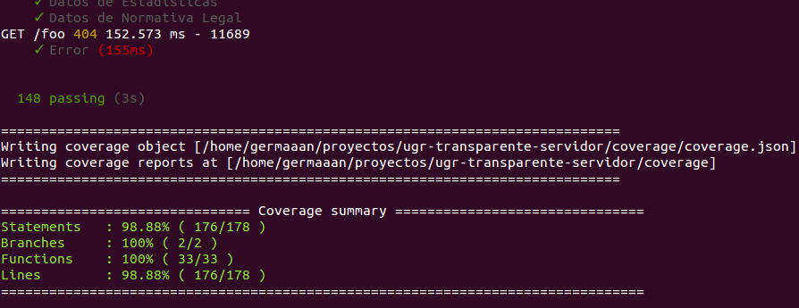Pruebas unitarias
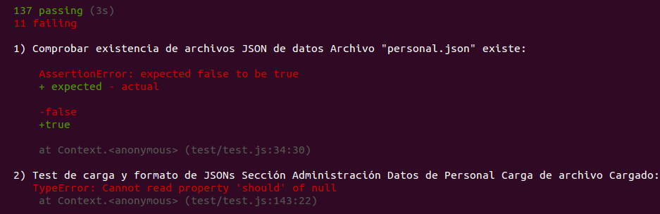Pruebas de cobertura
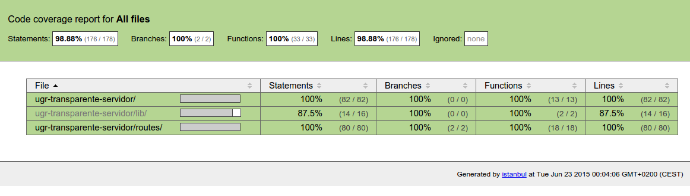Pruebas de cobertura
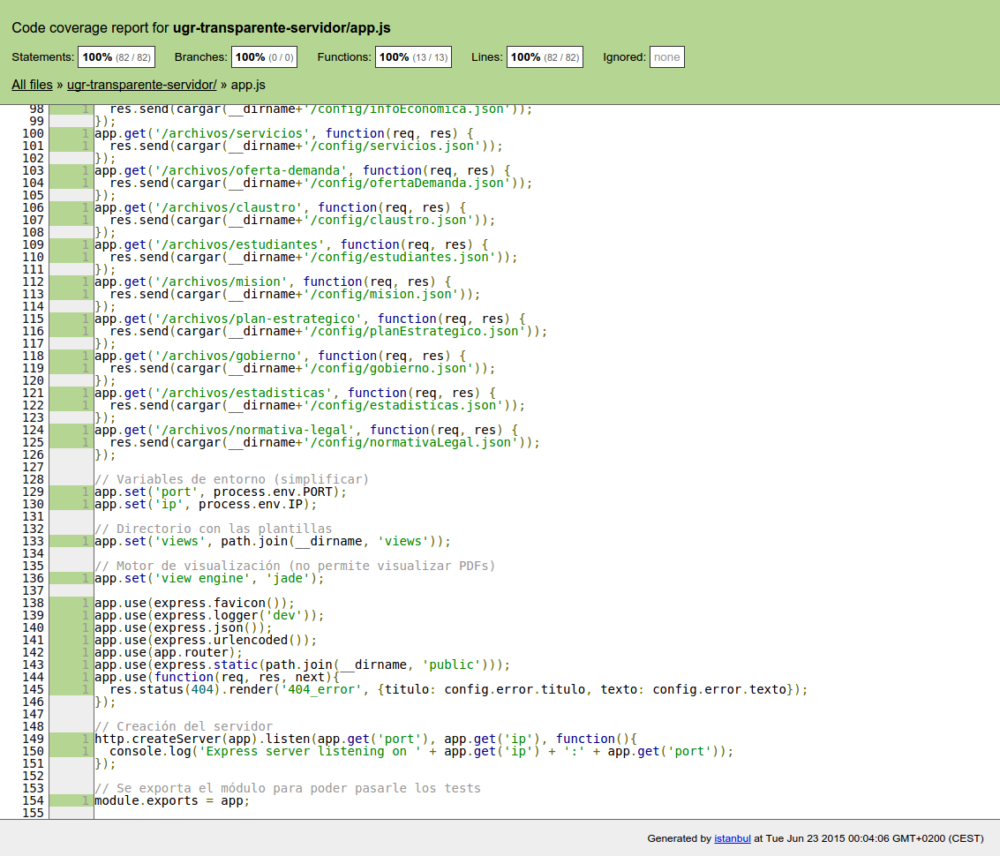Pruebas de cobertura
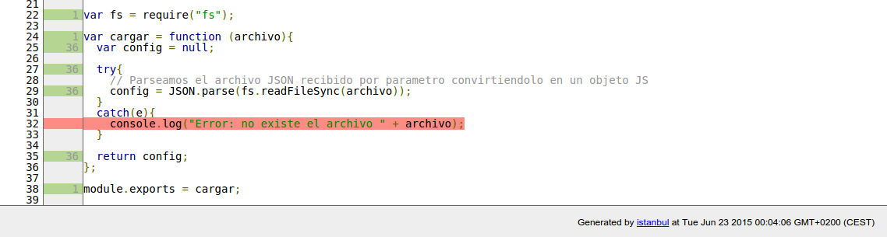Integración continua
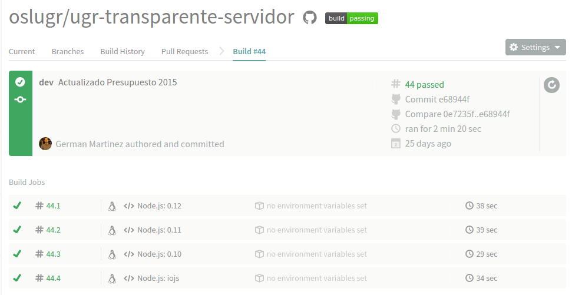Integración continua
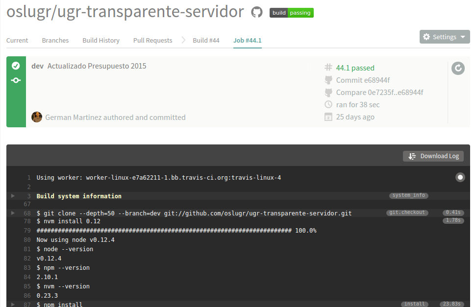Integración continua
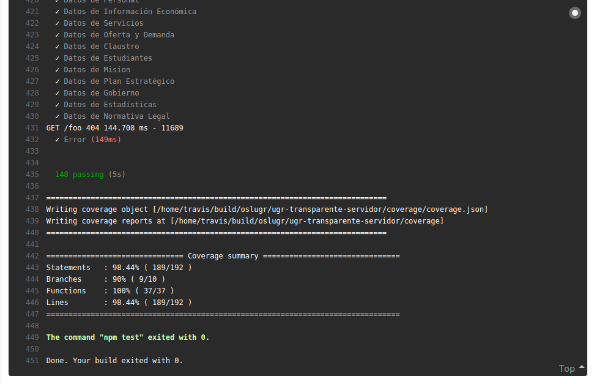Despliegue automático
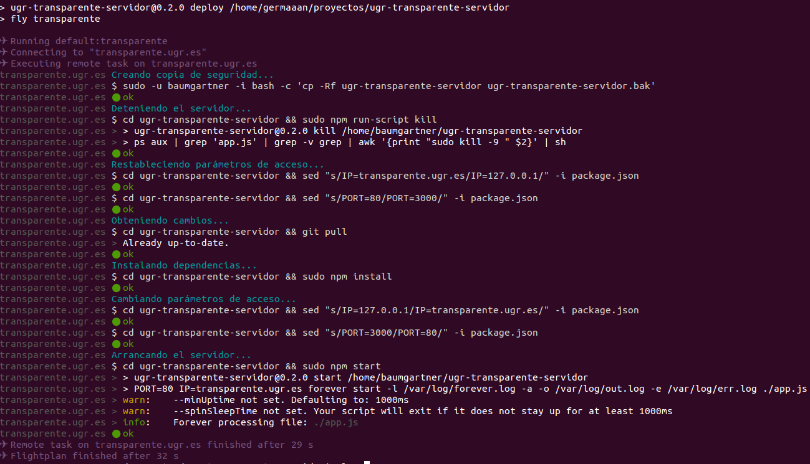Provisionamiento
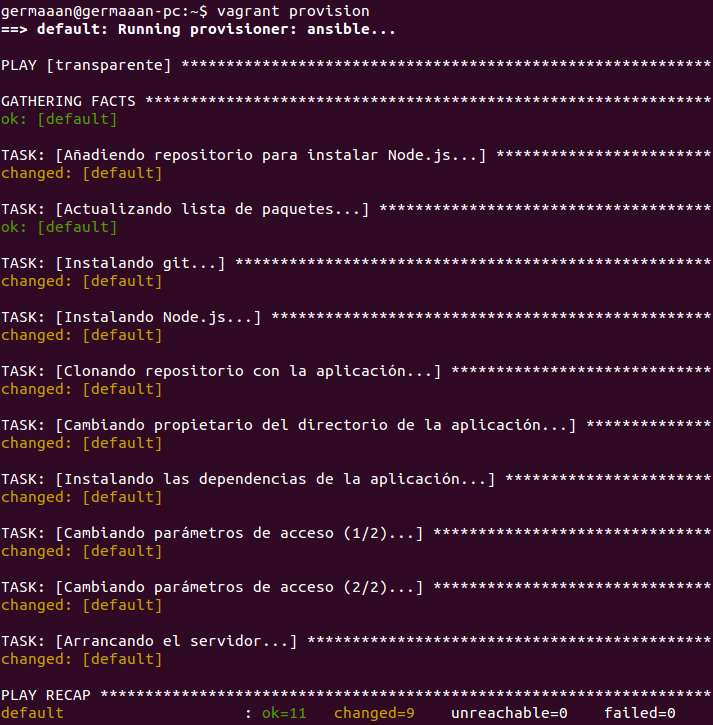Prueba de carga
- Últimos 6 meses: 2.388 peticiones
- 13 peticiones/día aproximádamente
- Pruebas con diferentes números de conexiones (30, 50, 100) y niveles de concurrencia (25%, 50%, 75%)
- Peticiones a la página más accedida
- Pruebas repetidas 10 veces con ApacheBench
Prueba de carga
- Últimos 6 meses: 2.388 peticiones
- 13 peticiones/día aproximádamente
- Pruebas con diferentes números de conexiones (30, 50, 100) y niveles de concurrencia (25%, 50%, 75%)
- Peticiones a la página más accedida
- Pruebas repetidas 10 veces con ApacheBench
Prueba de carga
- Tiempo de ejecución
- Solicitudes por segundo
- Tiempo por solicitud concurrente
- Velocidad de transferencia
Prueba de carga
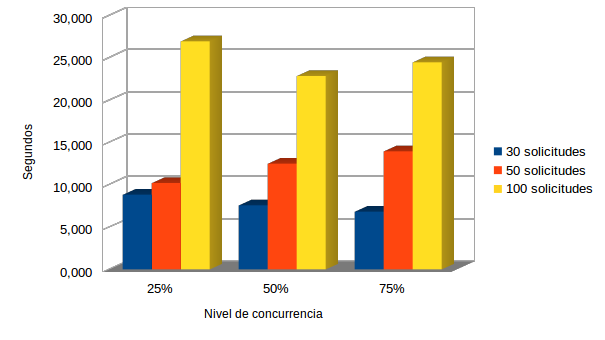Conclusiones y trabajos futuros
- Ventajas de desarrollo continuo
- Realizar instalación personalizada CKAN
- Portal más dinámico
- Solucionar saturación de servidor
Bibliografía
- "Continuous Delivery 101: Automated Deployments". Martin Etmajer, 18/11/2014.
- "¿Qué es DevOps?". Patricio Bruna, 23/10/2013.
- "The Beginner’s Guide to Unit Testing: What Is Unit Testing?". Tom McFarlin, 19/06/2012.
- "Travis-CI: What, Why, How". Sayanee Basu, 18/09/2013.
Bibliografía
- "What Is DevOps?". Carlos Gomez, 07/12/2011.
- "Tools for Unit Testing and Quality Assurance in Node JS". Adam Duncan, 29/04/2014.
- "A Closer Look At Personas: What They Are And How They Work (Part 1)". Shlomo Goltz, 06/08/2014.
- "Persona (user experience)". Wikipedia, última edición: 26/05/2015.
Bibliografía
- "Testing your frontend JavaScript code using mocha, chai, and sinon". Nicolas Perriault, 23/07/2013.
- Pagina de licencia CreativeCommons y APIs del software utilizado
- Material docente de las asignaturas Fundamentos de Ingeniería del Software, Ingeniería de Servidores e Infraestructura Virtual